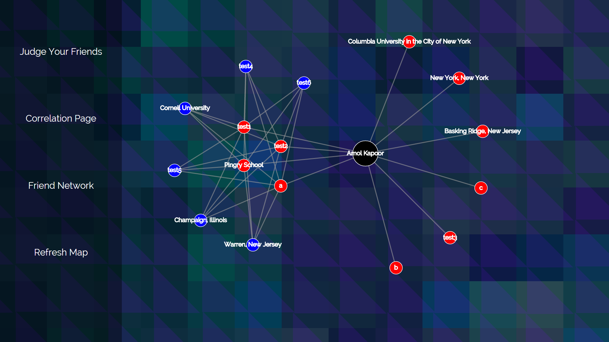
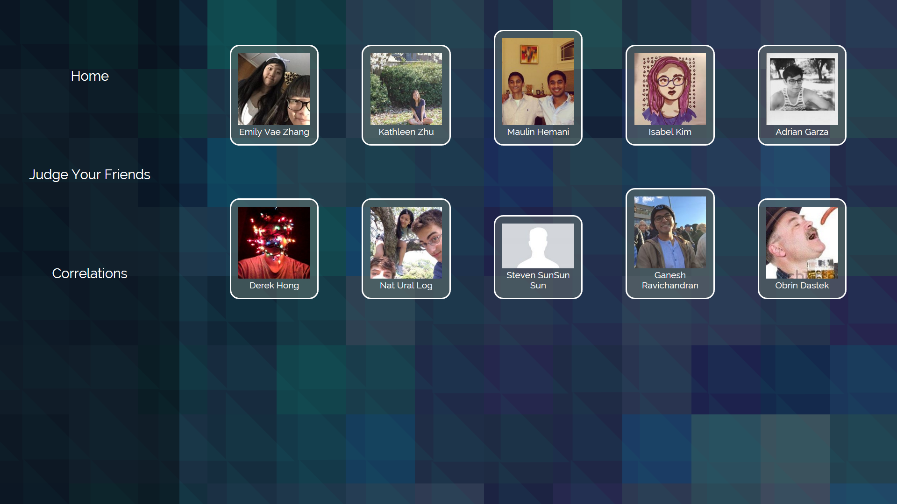
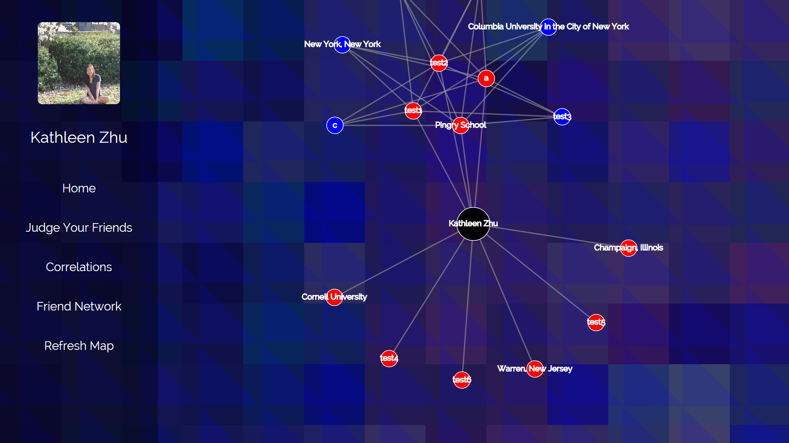
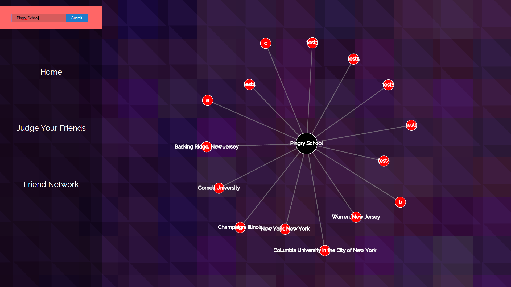

Scroll, Drag, and Hover to Learn about RealRep
Click any Node to Learn More, or Click the Logo To Try it Out
Click Here to Enable Zoom
Your Profile. Your Home.

Real Rep gives you access to data in a way that no other social media app does. That means that you can see exactly what your social footprint is. Thanks to the anonymous judging system that forms the backbone of the Real Rep data gathering system, you can directly pull the number of people who associate you with various traits, ideas, hobbies, objects...you get, in total, your real reputation.
Real Rep is about data visualization - easily presentable data is the foundation of the application and defined how it was built from the start. Users are presented with an easy to understand and easy to manipulate chart that quickly displays all of the relevant information that is color coded for convenience. See what you are directly related to with the red nodes; see what you are tangentially related to in the blue. Overall, you can get a stronger sense of how you relate to the world around you, often in ways that may be totally unexpected. The rest of the interface is designed with simplicity in mind - users can go from their profile to any other portion of the application with only a single click.
You have the ability to take control of your profile and your data. By choosing what data is displayed to start when you first log in - what, in short, you think of yourself - you have the opportunity to define how other information correlates to yours. And, Facebook access simply strengthens the profile, giving you and your friends a more complete view of who you really are.
Make Your Opinion Known
A huge part of how Real Rep works is through the ability to judge your friends. You have the chance to quickly and anonomously define the profile maps of anyone on your Facebook friend list. Make your opinion known, and help others discover what they are actually like. Let your gut instinct guide you as you endorse or pass various phrases and words for your friends.
We take bullying very seriously at Diagraphic Technologies, and we understand the possibility for abuse of such a system. We have taken numerous steps to ensure that users are not flooded with harmful messages, and monitor our databases for any inappropriate feedback. You will notice, for example, that users cannot choose their own phrases; instead, they can only select data points that the system chooses to display. Various restrictions can and will quickly be put in place on accounts that are shown to manipulate data.
But, all of this in mind, we understand that negative feedback is important for growth - and, of course, is a fair bit of fun in itself. Be respectful, be helpful, and make Real Rep enjoyable for everyone.
Learn About Your Friends

Real Rep is about finding hidden connections between you and the world. A big part of how Real Rep works is by finding similar traits, hobbies, and interests between you and your friends, and then highlighting them to make them easily accessible. Real Rep allows you to view the profile maps of any of your friends who use the app by clicking on their profile picture wherever it appears in the application.
To make it easy, we consolidate all profiles on a Friends Network page. Any person on your Facebook friend list who uses this app will be on this page - their graphs, just a single click away. Quickly jump between graphs, viewing connections and seeing data in a way that you never have before. Real Rep simplifies everything by laying it all out in front of you.

The first thing that should strike you about viewing a graph is how similar it looks to your own. That is because what you are seeing is the same thing your friend would see when he or she logs into the app! Much like viewing a facebook profile, you are given access to the same maps that your friends have access to. You can see not just your real reputation, but that of your friends as well. And this is what makes Real Rep so powerful. On the platform, you are given access to the unfiltered way individuals are viewed by those around them. Finding connections - even hidden ones - between those you knew just became a whole lot easier.
See What the World Thinks

Data is beautiful.
When shown correctly, thousnads of pieces of data can come together to show us new and exciting conclusions, helping us discover as we learn. Real Rep is, of course, a social media application; but it was designed with a love of data and information in mind. As such, we built in a special feature that allows users to see past the facade of friends lists, profiles, and Facebook likes.
The correlations page allows users to pull back the social media layer from this app, exposing the data connections within. Here, users can search for any word that is in the system, and Real Rep will return what it thinks are the most closely related terms to that word. Interested in what people say about your home town? What about your political party, or your college? All of this information - these connections and ideas, represented as lines and circles on your screen - are just a few keyboard strokes away.
RealRep.
The app that connects us to connect you to connect us all.